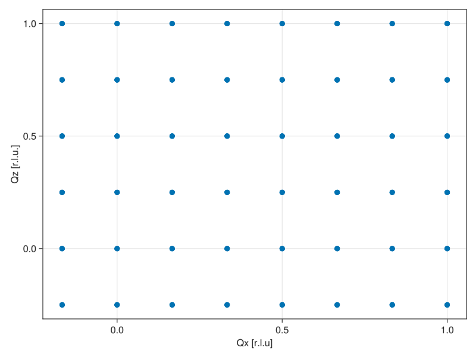
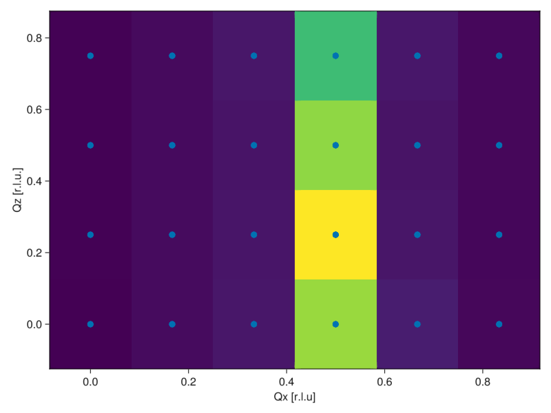
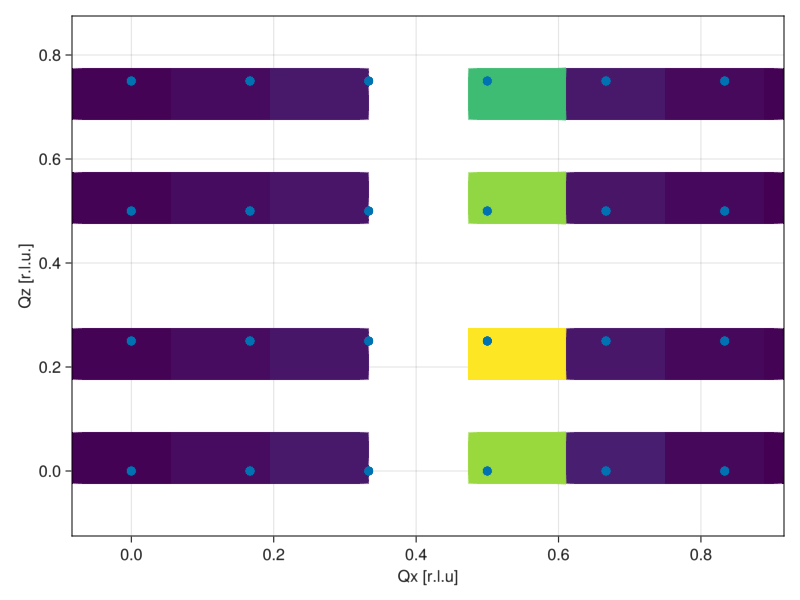
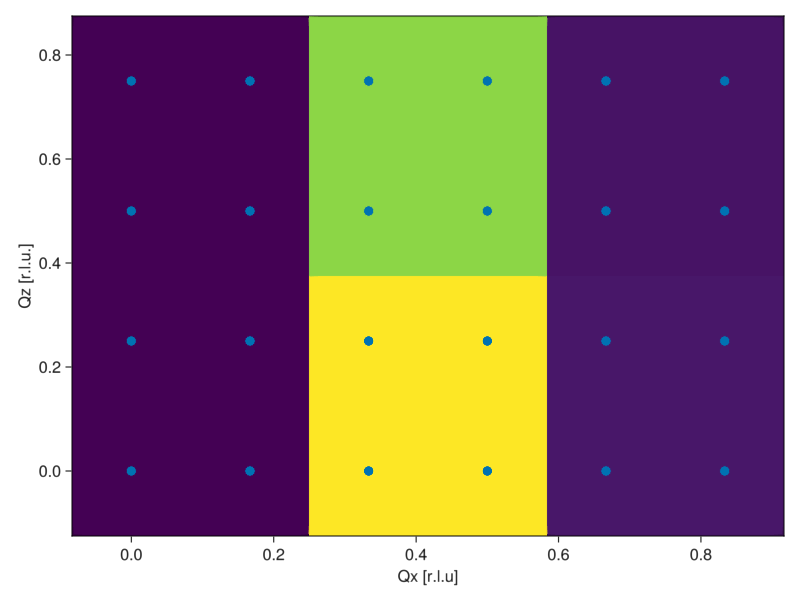
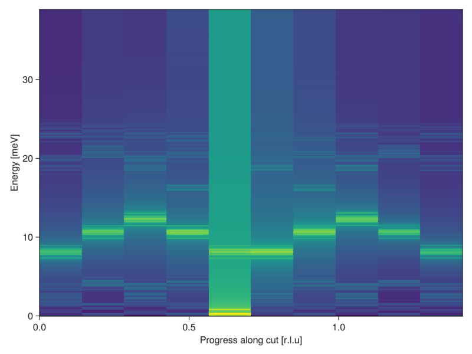
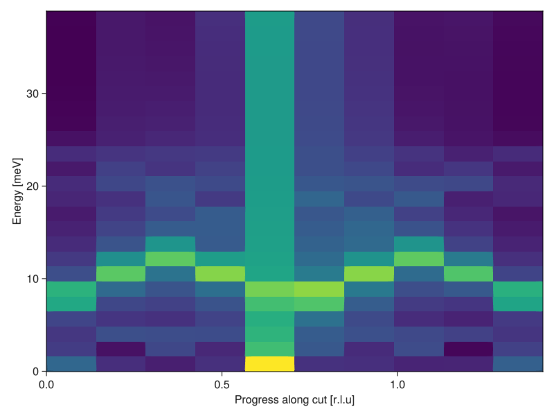

Histogram Binning Tutorial
using Sunny, GLMakieThis Tutorial demonstrates how to use Sunny's histogram binning capabilities (via intensities_binned). This functionality allows the simulation data produced by Sunny to be compared to experimental data produced by Inelastic Neutron Scattering (INS) in an apples-to-apples fashion. Experimental data can be loaded from a MDHistoWorkspace stored in a .nxs file by the Mantid software using load_nxs.
For this example, we will examine the CTFD compound, which is crystallographically approximately a square lattice. We specify the crystal lattice structure of CTFD using the lattice parameters specified by
W Wan et al 2020 J. Phys.: Condens. Matter 32 374007 DOI 10.1088/1361-648X/ab757a
latvecs = lattice_vectors(8.113,8.119,12.45,90,100,90)
positions = [[0,0,0]]
types = ["Cu"]
formfactors = [FormFactor(1,"Cu2")]
xtal = Crystal(latvecs,positions;types);We will use a somewhat small periodic lattice size of 6x6x4 in order to showcase the effect of a finite lattice size.
latsize = (6,6,4);In this system, the magnetic lattice is the same as the chemical lattice, and there is a spin-1/2 dipole on each site.
magxtal = xtal;
valS = 1/2;
sys = System(magxtal, latsize, [SpinInfo(1;S = valS)], :dipole; seed=1);Quoted value of J = +6.19(2) meV (antiferromagnetic) between nearest neighbors on the square lattice
J = 6.19 # meV
characteristic_energy_scale = abs(J * valS)
set_exchange!(sys,J,Bond(1,1,[1,0,0]))
set_exchange!(sys,J,Bond(1,1,[0,1,0]))Thermalize the system using the Langevin intergator. The timestep and the temperature are roughly based off the characteristic energy scale of the problem.
Δt = 0.05 / characteristic_energy_scale
kT = 0.01 * characteristic_energy_scale
langevin = Langevin(Δt; λ=0.1, kT=kT)
randomize_spins!(sys);
for i in 1:10_000 # Long enough to reach equilibrium
step!(sys, langevin)
endThe neutron spectrometer used in the experiment had an incident neutron energy of 36.25 meV. Since this is the most amount of energy that can be deposited by the neutron into the sample, we don't need to consider energies higher than this.
ωmax = 36.25;We choose the resolution in energy (specified by the number of nω modes resolved) to be ≈20× better than the experimental resolution in order to demonstrate the effect of over-resolving in energy.
nω = 480;
dsf = DynamicStructureFactor(sys; Δt=Δt, nω=nω, ωmax=ωmax, process_trajectory=:symmetrize)StructureFactor (21.075 MiB)
[S(q,ω) | nω = 959 | 1 sample]
Lattice: (6, 6, 4)×1
6 correlations in Dipole mode:
╔ ⬤ ⬤ ⬤ Sx
║ ⋅ ⬤ ⬤ Sy
╚ ⋅ ⋅ ⬤ Sz
We re-sample from the thermal equilibrium distribution several times to increase our sample size
nsamples = 3
for _ in 1:nsamples
for _ in 1:8000
step!(sys, langevin)
end
add_sample!(dsf, sys)
endSince the SU(N)NY crystal has only finitely many lattice sites, there are finitely many ways for a neutron to scatter off of the sample. We can visualize this discreteness by plotting each possible Qx and Qz, for example:
# Compute some scattering vectors at and around the first BZ...
scatter!(ax,Qx,Qz)
One way to display the structure factor is to create a histogram with one bin centered at each discrete scattering possibility using unit_resolution_binning_parameters to create a set of BinningParameters.
params = unit_resolution_binning_parameters(dsf)Binning Parameters
⊡ 6 bins from -0.083 to +0.917 along [+1.29 dx] (Δ = 0.129)
⊡ 6 bins from -0.083 to +0.917 along [+1.29 dy] (Δ = 0.129)
⊡ 4 bins from -0.125 to +0.875 along [-0.34 dx +1.95 dz] (Δ = 0.126)
⊡ 480 bins from -0.041 to +38.893 along [+1.00 dE] (Δ = 0.081)
Since this is a 4D histogram, it further has to be integrated over two of those directions in order to be displayed. Here, we integrate over Qy and Energy using integrate_axes!:
integrate_axes!(params;axes = [2,4]) # Integrate over Qy (2) and E (4)Binning Parameters
⊡ 6 bins from -0.083 to +0.917 along [+1.29 dx] (Δ = 0.129)
∫ Integrated from -0.083 to +0.917 along [+1.29 dy] (Δ = 0.774)
⊡ 4 bins from -0.125 to +0.875 along [-0.34 dx +1.95 dz] (Δ = 0.126)
∫ Integrated from -0.041 to +38.893 along [+1.00 dE] (Δ = 38.933)
Now that we have parameterized the histogram, we can bin our data. In addition to the BinningParameters, an intensity_formula needs to be provided to specify which dipole, temperature, and atomic form factor corrections should be applied during the intensity calculation.
formula = intensity_formula(dsf, :perp; kT, formfactors)
intensity,counts = intensities_binned(dsf, params; formula)
normalized_intensity = intensity ./ counts;With the data binned, we can now plot it. The axes labels give the bin centers of each bin, as given by axes_bincenters.
bin_centers = axes_bincenters(params);
heatmap!(ax,bin_centers[1],bin_centers[3],normalized_intensity[:,1,:,1])
scatter!(ax,Qx,Qz)
xlims!(ax,params.binstart[1],params.binend[1])
ylims!(ax,params.binstart[3],params.binend[3])

Note that some bins have no scattering vectors at all when the bin size is made too small:
params.binwidth[1] /= 1.2
params.binwidth[3] /= 2.5
Conversely, making the bins bigger doesn't break anything, but loses resolution:
params.binwidth[1] *= 2
params.binwidth[3] *= 2
Recall that while we under-resolved in Q by choosing a small lattice, we over-resolved in energy:
scatter!(ax,x,y)MakieCore.Scatter{Tuple{Vector{GeometryBasics.Point{2, Float32}}}}Let's make a new histogram which includes the energy axis. The x-axis of the histogram will be a 1D cut from Q = [0,0,0] to Q = [1,1,0]. See slice_2D_binning_parameters.
x_axis_bin_count = 10
cut_width = 0.3
params = slice_2D_binning_parameters(dsf,[0,0,0],[1,1,0],x_axis_bin_count,cut_width)Binning Parameters
⊡ 10 bins from +0.000 to +1.414 along [+0.91 dx +0.91 dy] (Δ = 0.109)
∫ Integrated from -0.150 to +0.150 along [-0.91 dx +0.91 dy] (Δ = 0.232)
∫ Integrated from -0.150 to +0.150 along [+0.34 dx -1.95 dz] (Δ = 0.151)
⊡ 480 bins from -0.041 to +38.893 along [+1.00 dE] (Δ = 0.081)
There are no longer any scattering vectors exactly in the plane of the cut. Instead, as described in the BinningParameters output above, the transverse Q directions are integrated over, so slightly out of plane points are included.
We plot the intensity on a log-scale to improve visibility.
intensity,counts = intensities_binned(dsf, params; formula)
log_intensity = log10.(intensity ./ counts);
heatmap!(ax,bin_centers[1],bin_centers[4],log_intensity[:,1,1,:])
By reducing the number of energy bins to be closer to the number of bins on the x-axis, we can make the dispersion curve look nicer:
params.binwidth[4] *= 20
heatmap!(ax,bin_centers[1],bin_centers[4],log_intensity[:,1,1,:])
This page was generated using Literate.jl.